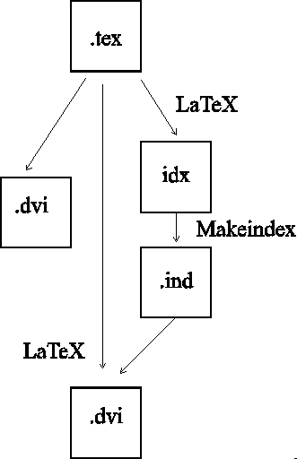
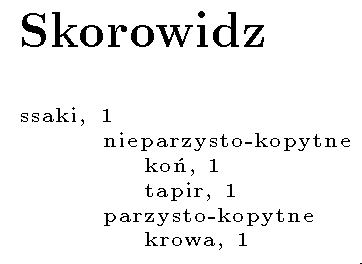

Definiowanie postaci skorowidza
Wstêp
Ka¿da powa¿na publikacja o charakterze naukowo-technicznym powinna posiadaæ skorowidz (indeks), czyli uporz±dkowany wykaz u¿ywanych, b±d¼ definiowanych pojêæ, zawieraj±cy informacje na jakich stronach s± one u¿ywane.Jedn± z zalet TeX-a jest mo¿liwo¶æ automatycznego tworzenia zbiorów dodatkowych, zawieraj±cych informacje zwi±zane z przetwarzanym tekstem. Utworzony zbiór mo¿emy przetworzyæ innym programem; przy ponownym uruchomieniu TeX-a mo¿e on zostaæ do³±czony do dokumentu podstawowego.
Do porz±dkowania zbioru hase³ s³u¿y program plmindex
(dawniej makeindx lub makeindex).
Opisuj±c proces tworzenia skorowidza powo³ujê siê na swoj±
implementacjê; program plmindex, czyli
Polish (Multilanguage) index. Program mo¿e byæ zastosowany
do budowy skorowidza w polskich publikacjach. Dok³adny
opis w³asno¶ci programu plmindex znajduje
siê w nastêpnym artykule tego cyklu.
Schemat przetwarzania
Tworzenie skorowidza w dokumencie przetwarzanym TeX-em
zosta³o zrealizowane wed³ug powy¿szego schematu zilustrowanego
rysunkiem:

Po pierwszym przetwarzaniu dokumentu otrzymujemy zbiór
dodatkowy z rozszerzeniem .idx (podstawowy trzon
nazwy jest identyczny z nazw± dokumentu). Zawiera on wszystkie
has³a, definiowane w dokumencie ¼ród³owym za pomoc±
polecenia \index. W celu zainicjowania zbioru hase³
nale¿y wywo³aæ polecenie \plmindex
Podstawow± rol± programu plmindex jest uporz±dkowanie i
posortowanie zbioru hase³ wygenerowanego przez pakiet LaTeX-a.
Uporz±dkowany zbiór skorowidza
do³±czamy do dokumentu podstawowego poleceniem \printindex.
Standardowo zbiór ten ma rozszerzenie .ind.
Tworzenie zbioru hase³
Niezbêdny zestaw poleceñ w dokumencie umo¿liwiaj±cy utworzenie
i do³±czenie skorowidza:
\documentclass{article}
\usepackage{makeidx}
\makeindex
\begin{document}
.
.
.
..... bqq\index{bqq}
.... aqq\index{aqq}
.
.
.
\printindex
\end{document}
Po przetworzeniu pakietem LaTeX2e otrzymamy nastêpuj±cy zbiór skorowidza:
\indexentry{bqq}{1}
\indexentry{aqq}{1}
Poszczególne has³a sa definiowane poleceniem \index{...}.
Najwygodniej jest umieszczaæ polecenia tworz±ce has³a w momencie
pisania dokumentu. Trudno sobie wyobraziæ automat wprowadzaj±cy
wskazane s³owa do skorowidza, poniewa¿ has³a powinny wystêpowaæ
w swojej podstawowej formie (np. rzeczowniki w mianowniku), a nie
w formie wynikaj±cej z kontekstu; pozostaje ,,rêczne'' definiowanie
has³a przy okazji jego istotnego wyst±pienia.
W zbiorze hase³
ka¿de zdefiniowane pojêcie jest umieszczane jako pierwszy argument polecenia
\indexentry, drugim argumentem jest numer strony na
której ono wyst±pi³o (wg. aktualnego formatu pisania numerów stron).
Nale¿y dbaæ o to, aby miêdzy wyst±pieniem danego has³a, a
poleceniem wprowadzaj±cym je do skorowidza nie nast±pi³o przej¶cie
do nowej strony.
| definicja b³êdna | definicja poprawna |
aqq \index{aqq}
| aqq\index{aqq}
|
Przetwarzanie zbioru hase³
Zbiór zawieraj±cy listê wszystkich hase³ nale¿y przetworzyæ programem plmindex. W najprostszym przypadku linia wywo³ania programu wygl±da nastêpuj±co:plmindex zbiórHas³a definiowane w zbiorze zbiór
.idx zostan±
pogrupowane (usuniête wielokrotne definicje na tej samej stronie)
oraz posortowane i zapisane do zbioru zbiór.ind.
W naszym przyk³adzie,
uporz±dkowany zbiór (rozszerzenie .ind)
bêdzie wygl±da³ nastêpuj±co:
\begin{theindex}
\item aqq, 1
\indexspace
\item bqq, 1
\end{theindex}
Podczas powtórnego przetwarzania dokumentu pakietem LaTeX2e, powy¿szy zbiór
zostanie do³±czony w miejscu wyst±pienia polecenia \printindex.
Skorowidz wielopoziomowy
Program plmindex pozwala na zdefiniowanie trójpoziomowej struktury has³a. Znakiem odzielaj±cym poziomy jest! (wykrzyknik). Przyk³adowe
polecenia:
krowa\index{ssaki!parzysto-kopytne!krowa}
koñ\index{ssaki!nieparzysto-kopytne!koñ}
tapir\index{ssaki!nieparzysto-kopytne!tapir}
s± ssakami\index{ssaki}
okre¶lenia: parzysto-kopytne i nieparzysto-kopytne
s± has³ami podrzêdnymi has³a ssaki i samodzielnie
nie wyst±puj± (nie s± definiowane w sposób jawny). Nazwy krowa,
koñ i tapir
stanowi± najni¿szy poziom.
Po przetworzeniu programem plmindex zbiór .ind wygl±da nastêpuj±co:
\begin{theindex}
\item ssaki, 1
\subitem nieparzysto-kopytne
\subsubitem koñ, 1
\subsubitem tapir, 1
\subitem parzysto-kopytne
\subsubitem krowa, 1
\end{theindex}
Numery stron s± umieszczane tylko wtedy je¶li has³o jest wprowadzone
w sposób jawny do indeksu (np.
has³o parzysto-kopytne zostanie utworzone automatycznie,
i nie zostanie opatrzone numerem strony).
Ostatecznie po wydrukowaniu powy¿szy fragment skorowidza wygl±da
nastêpuj±co:

Zmiana kolejno¶ci sortowania
Czasami zdarza siê, ¿e has³o powinno byæ umieszczone w innym miejscu
ni¿ wynika to z porz±dku leksykograficznego (np. polecenie
TeX-a poprzedzone znakiem \ umieszczamy w miejscu
wynikaj±cym z nazwy polecenia, ignoruj±c znak \). W tym wypadku
polecenie \index ma nastêpuj±c± skladniê:
\index{has³o do sortowania@has³o do indeksu}
okre¶lenie
has³o do sortowania s³u¿y programowi plmindex jako wzorzec do nadania
porz±dku leksykograficznego, natomiast has³o do indeksu
znajdzie siê w spisie. W przypadku hase³ wielopoziomowych
polecenie mo¿e wygl±daæ nastêpuj±co:
\index{sort@index!sort-1@index-1!sort-2@index-2}
Innym powodem u¿ycia tej konstrukcji mo¿e byæ chêæ zmiany kroju
pisma jakim sk³adane jest dane has³o (np. wyró¿nienie s³owa kluczowego):
\index{alfa@{\itshape alfa}}
Zbiór .ind wygl±da nastêpuj±co:
\begin{theindex}
\item {\itshape alfa}, 1
\end{theindex}
Odsy³acze w skorowidzu, efekty dodatkowe
Definiuj±c has³o skorowidza, mo¿emy w tym momencie zwróciæ uwagê czytelnika na inne has³o, s³u¿y do tego operator encapsulacji, którym jest znak|.Przyk³ad:
\def\seename{p.}
\def\see#1#2{#2, ({\itshape \seename~#1}\/)}
aqq\index{aqq|see{bqq}}
da nam nastêpuj±ce has³o w skorowidzu:
\item aqq, \see{bqq}{1}
które w dokumencie wynikowym, bêdzie wygl±da³o nastêpuj±co:
- aqq, 1, (p. bqq)
| jest traktowany
jako makropolecenie (jego argumentem aktualnym jest zawsze numer strony).
W przypadku konstrukcji see definiowany jest w³asny parametr
okre¶laj±cy has³o podobne -- parametr drugi (numer strony) jest pobierany
z listy parametrów aktualnych, ale nie jest wykorzystywany
(w przeciwnym wypadku pojawi³by siê jako blok {1}.
Za pomoc± enkapsulacji mo¿na zrealizowaæ rozró¿nianie typu wystêpuj±cego has³a, np. miejsce definicji odró¿niamy od normalnego wyst±pienia u¿yciem innej czcionki przy podawaniu numeru strony; i tak:
- italic has³o u¿ywane w przyk³adzie
- bold miejsce zdefniowania pojêcia
- pozosta³e sk³adane czcionk± standardow±
- bold miejsce zdefniowania pojêcia
\def\italic#1{{\itshape #1}}
\def\bold#1{{\bfseries #1}}
\def\idxb#1{\index{#1|bold}}
\def\idxi#1{\index{#1|italic}}
\let\idx=\index
aqq\idxb{aqq} %miejsce definicji
aqq\idx{aqq} %normalne wyst±pienie
aqq\idxi{aqq} %u¿ycie w przyk³adzie
i rezultat:
\item aqq, 1, \bold{1}, \italic{1}
Grupowanie numerów stron
U¿ywaj±c polecenia\index mo¿emy zadeklarowaæ, ¿e
dane has³o jest opisywane na kilku stronach. Pocz±tek
opisu has³a zaznaczamy:
strona 1: aqq\index{aqq|(}
a koñczymy
strona 3: aqq\index{aqq|)}
w wyniku dzia³ania programu plmindex i ponownego przetwarzania LaTeX-em
otrzymamy:
aqq, 1-3
je¿eli miêdzy konstrukcj±
\index{...|(}, a \index...|)}
pojawi siê normalna definicja tego samego has³a to zostanie
ona zignorowana (jako zawieraj±ca siê w zadanym zakresie). Je¿eli konstrukcja
zamykaj±ca nie wyst±pi, to ostatnia definicja has³a spe³ni t± rolê.
Standardowo, je¿eli has³o wystêpuje na kolejnych stronach to
numery stron s± grupowane (efekt taki jak w powy¿szym przyk³adzie).
U¿ywanie powy¿szej
konstrukcji ma sens, je¶li chcemy uzyskaæ ten efekt tylko dla wybranych hase³,
wtedy nale¿y wywo³aæ program plmindex z opcj±
-r, która wy³±czy standardowe grupowanie numerów stron.
Znaki specjalne
W wy¿ej opisywanych konstrukcjach znaki |,
|,
! i
@ mia³y znaczenie specjalne, je¿eli chcemy
w ha¶le skorowidza u¿yæ jednego z wy¿ej wymienionych znaków
nale¿y poprzedziæ go znakiem " np.
aqq!aqq\index{aqq"!aqq}
wprowadzi do skorowidza has³o:
aqq!aqq, 1
Definiowanie postaci skorowidza
Program plmindex porz±dkuj±c zbiór hase³ wstawia szereg poleceñ. Mo¿emy mieæ wp³yw zarówno na ich zestaw, jak i na ich definicjê. W³a¶ciwo¶ci programu mo¿emy zmieniaæ na trzy sposoby:- zmieniæ standardowe definicje u¿ywanych poleceñ (makroinstrukcji)
- Program plmindex zanurza zbiór posortowanych i posegregowanych hase³
w ¶rodowisku
index. U¿ycie ¶rodowiska powoduje zdefiniowanie podrozdzia³u o nazwie zdefiniowanej przez makroinstrukcjê\indexname. Standardowo warto¶ci± polecenia jest napisIndex, je¿eli chcemy zmieniæ napis nale¿y zmieniæ definicjê tego polecenia np:\renewcommand\indexname{Skorowidz}Do definiowania sposobu prezentacji hase³ na ró¿nych poziomach u¿ywane s± nastêpuj±ce makroinstrukcje:
| poziom | nazwa | standardowa definicja |
|---|---|---|
| 1 | \item | \par\hangindent 40\p@ |
| 2 | \subitem | \par\hangindent 40\p@ \hspace*{20\p@} |
| 3 | \subsubitem | \par\hangindent 40\p@ \hspace*{30\p@} |
- miêdzy grupy hase³ (miêdzy has³a zaczynaj±ce siê od ró¿nych znaków --
ale tylko na najwy¿szym poziomie) jest wstawiane polecenie:
\indexspaceo warto¶ci
\par\vskip10\p@ \@plus5\p@ \@minus 3\p@\relax - zmieniæ zestaw poleceñ (makroinstrukcji)
-
Mo¿emy utworzyæ specjalny zbiór zawieraj±cy szereg poleceñ
steruj±cych programem plmindex. Program plmindex wczytuje ten zbiór
je¿eli jest zdefiniowana opcja
-s(p. opcje); standardowym rozszerzeniem nazwy jest.mst. W zbiorze tym mo¿na zdefiniowaæ nastêpuj±ce warto¶ci:
| Nazwa | Warto¶æ standardowa | Opis |
|---|---|---|
preamble string |
"\\begin{theindex}\n" | pocz±tek zbioru |
postamble string |
"\n\n\\end{theindex}\n" | koniec zbioru |
setpage_prefix string |
"\n \\setcounter{page}{" | pocz±tek polecenia definiuj±cy zmianê warto¶ci numeru strony |
setpage_suffix string |
"}\n" | koniec definicji polecenia zmiany numeru strony |
group_skip string |
"\n\n \\indexspace\n" | polecenie wstawiane przed rozpoczêciem grupy hase³ |
headings_flag string |
0 | flaga aktywuj±ca wstawianie poleceñ przy zmianie pierwszego znaku hase³, warto¶æ pozytywna (>0) wstawiany bêdzie znak w postaci du¿ej litery, je¶li <0 znak ma³ej litery |
heading_prefix string |
"" | ci±g znaków, który bêdzie poprzedza³ w.m. znak |
symhead_positive string |
"Symbols" | nazwa grupy hase³ nie zaczynaj±cych siê liter± (wstawiany je¶li flaga >0) |
symhead_negative string |
"symbols" | nazwa grupy hase³ nie zaczynaj±cych siê liter± (wstawiany je¶li flaga <0) |
numhead_positive string |
"Numbers" | nazwa grupy hase³ zaczynaj±cych siê cyfr± (wstawiany je¶li flaga <0) |
numhead_negative string |
"numbers" | nazwa grupy hase³ zaczynaj±cych siê cyfr± (wstawiany je¶li flaga <0) |
item_0 string |
"\n \\item " | polecenie wstawiane miêdzy dwie pozycje na poziomie 0 |
item_1 string |
"\n \\subitem " | polecenie wstawiane miêdzy dwie pozycje na poziomie 1 |
item_2 string |
"\n \\subsubitem " | polecenie wstawiane miêdzy dwie pozycje na poziomie 2 |
item_01 string |
"\n \\subitem " | polecenie wstawiane miêdzy pozycje poziomu 0 i 1 |
item_x1 string |
"\n \\subitem " | polecenie wstawiane miêdzy pozycje poziomu 0 i 1, je¶li pozycja poziomu 0 nie wyst±pi³a w sposób jawny (nie bêdzie opatrzona numerem strony) |
item_12 string |
"\n \\subsubitem " | polecenie wstawiane miêdzy pozycje poziomu 1 i 2 |
item_x2 string |
"\n \\subsubitem " | polecenie wstawiane miêdzy pozycje poziomu 1 i 2 je¶li pozycja poziomu 1 nie wyst±pi³a w sposób jawny (nie bêdzie opatrzona numerem strony) |
delim_0 string |
", " | separator miêdzy has³em poziomu 0, a pierwszym numerem strony |
delim_1 string |
", " | separator miêdzy has³em poziomu 1, a pierwszym numerem strony |
delim_2 string |
", " | separator miêdzy has³em poziomu 2, a pierwszym numerem strony |
delim_n string |
", " | separator miêdzy kolejnymi numerami stron (wszystkie poziomy hase³) |
delim_r string |
"--" | separator odzielaj±cy numery zakresów stron wystêpowania has³a |
delim_t string |
"" | ci±g znaków umieszczany na koñcu listy numerów stron |
encap_prefix string |
"\\" | pierwsza czê¶æ ci±gu
znaków wstawiana
przy u¿ywaniu
znaku steruj±cego
enkapsulacji
(|) |
encap_infix string |
"{" | druga czê¶æ
znaków wstawiana
przy u¿ywaniu
znaku steruj±cego
enkapsulacji
(|) |
encap_suffix string |
"}" | ci±g znaków zamykaj±cy polecenie enkapsulacji |
line_max number |
72 | maksymalna liczba znakow w linii (je¶li definicja has³a bêdzie d³u¿sza, zostanie przeniesiona do nastêpnej linii) |
indent_space string |
"\t\t" | ci±g znaków wstawiany na pocz±tku ,,³amanej linii'' |
indent_length number |
16 | okre¶lenie szeroko¶ci w.m. ci±gu znaków (potrzebne do prowadzenia pozycji w bie¿±cej linii |
- zmieniæ sposób dzia³ania programu plmindex definiuj±c parametry wywo³ania (opcje)
-
Program plmindex posiada szereg parametrów wywo³ania. Ogólna
postaæ wygl±da nastêpuj±co:
plmindex [<opt>] [<idx0> ...]
<opt>mog± przyjmowaæ jedn± z nastêpuj±cych warto¶ci:
Przyk³ad:
Zawatro¶æ zbioru .mst
delim_0 "~~"
delim_1 "~~"
delim_2 "~~"
headings_flag 1
heading_prefix "{\\par\\goodbreak\\vskip2ex\\par\\large\\bf\\noindent "
heading_suffix "}\\par\\nobreak\\vskip 1.5ex"
daje nastêpuj±cy efekt:
\begin{theindex}
{\par\goodbreak\vskip2ex\par\large\bf\noindent A}\par\nobreak\vskip 1.5ex
\item a~~\bold{16}, \see{odsy³acz}{16}, \bold{25}
\subitem effect~~\bold{20}
\subsubitem new~~\bold{20}
\subsubitem overlay~~\bold{20}
\subsubitem replace~~\bold{20}
\subitem href~~\bold{25}
\subsubitem \#~~\bold{19}
.
.
.
\indexspace
{\par\goodbreak\vskip2ex\par\large\bf\noindent Z}\par\nobreak\vskip 1.5ex
\item zlecenie poszukiwania~~54
\item zmiana czcionki~~28
\item znaki specjalne~~92
\end{theindex}
makroinstrukcja \bold zosta³a zdefiniowana jako:\def\bold#1{{\bfseries #1}}
| opcja | opis | |||||||||||
|---|---|---|---|---|---|---|---|---|---|---|---|---|
| -l | podczas sortowania ignoruj spacje miêdzy s³owami has³a;
np. has³o aqq bqq zostanie potraktowane
tak jak aqqbqq
| |||||||||||
| -i | jako zbioru hase³ u¿yj standardowego strumienia (stdin) | |||||||||||
| -q | nie wy¶wietlaj komunikatów | |||||||||||
| -r | nie grupuj numerów stron; np. je¿eli has³o wyst±pi na stronie 1, 2 i 3 to w skorowidzu nie zostanie to przedstawione jako 1-3, natomiast has³a grupowane w sposób jawny (p. grupowanie numerów stron), bêd± mia³y pogrupowane numery stron | |||||||||||
| -c | ci±g spacji i tabulatorów jest zamieniany na jedn± spacjê | |||||||||||
| -L lang | wybór jêzyka, determinuj±cego porz±dek
leksykograficzny
| |||||||||||
| -s sty |
nazwa zbioru definicji (standardowe rozszerzenie
.mst)
| |||||||||||
| -o ind | nazwa zbiory wyj¶ciowego (standardowo taka
jak zbiór wej¶ciowy z
rozszerzeniem .ind)
| |||||||||||
| -? -h | wy¶wietlenie listy opcji | |||||||||||
| -! | opcja procedur specjalnych (zale¿y od
wybranego jêzyka; dla jêzyka polskiego
oznacza, ¿e liczby (cyfry) bêda umieszczane
w miejscu wynikaj±cym z napisu reprezentuj±cego
ich warto¶ci; np. cyfra 1 zostanie potraktowana
tak jak napis jeden) (czywi¶cie
mo¿na wymusiæ inn± kolejno¶æ
sortowania) | |||||||||||
| -t log | log zbiór zawieraj±cy
dodatkowe komunikaty (standardowo nazwa taka jak
zbiór wej¶ciowy z rozszerzeniem
.ilg)
| |||||||||||
| -p num | num
pocz±tkowa warto¶æ licznika stron |
- <idx0> - zbiór hase³ (standardowe rozszerzenie
.idx)

 W³odzimierz Macewicz
W³odzimierz Macewicz
Strona by³a razy czytana,